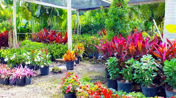
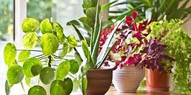
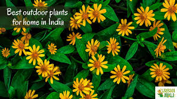

A nursery is a place where plants are propagated and grown to a desired size. In a word, a nursery is a centre of seedling production where seedlings are produced and taken care until transplantation in the main field. Mostly the plants concerned are for gardening, forestry, or conservation biology, rather than agriculture. They include retail nurseries, which sell to the general public; wholesale nurseries, which sell only to businesses such as other nurseries and commercial gardeners; and private nurseries, which supply the needs of institutions or private estates. Some will also work in plant breeding. A "nurseryman" is a person who owns or works in a nursery.
There are a number of different types of nurseries, broadly grouped as wholesale or retail nurseries, with some overlap depending on the specific operation. Wholesale nurseries produce plants in large quantities which are sold to retail nurseries,[3] landscapers, garden centers, and other retail outlets which then sell to the public.
Wholesale nurseries may be small operations that produce a specific type of plant using a small area of land, or very larger operations covering many acres. They propagate plant material or buy plants from other nurseries which may include rooted or unrooted cuttings, or small rooted plants called plugs, or field grown bare root plants, which are planted and grown to a desired size. Some wholesale nurseries produce plants on contract for others which place an order for a specific number and size of plant, while others produce a wide range of plants that are offered for sale to other nurseries and landscapers and sold as first come first served.